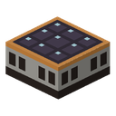
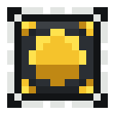

ミラー集光器
alaindustrial:radiant_solar_panel
概要
ミラー集光器は昼用ブランチの第3段階で、日光ソーラーパネルから 育てたものです。そのパネルの2倍強力で、ゲーム内の正午の2時間はさらにその1.5倍を出します。
手前の2枚のパネルのように平らではありません。集光部はマストの上に持ち上げられ、その両脇に 2枚のミラーが立って光を中心へ集めます。集めるものが何もないとき — 夜、雨、雷雨、あるいは 雪の下 — ミラーは上へ跳ね上がり、集光部の上で折りたたまれて光学系をしまい込みます。 今それが動いているかどうかは、遠くからでも見て分かります。
ミニ例: 晴天昼に 8 EU/FE/t、正午に 12 EU/FE/t。屋根に2基置けば作業場を支え、夕方までに エネルギー貯蔵庫を満たします。
エネルギー
| 項目 | 値 |
|---|---|
| 役割 | バッファ付きの生産者 |
| バッファ (EU/FE) | 16 000 |
| 最大入力 | 該当なし (エネルギーを受け取らない) |
| 最大出力 (EU/FE/t) | 20 (LV) |
| EU/FE/t (基本) | 開放空の昼に 8 |
| EU/FE/t (正午) | 12 |
ティアは LV のままです。正午の 12 EU/FE/t でさえ LV の上限にはるかに届かず、上げる理由がありません。
発電
オーバーワールドのみ、昼間のみ、上が開放空のときのみ動作します。
| 項目 | 値 |
|---|---|
| 供給源 | 太陽光 |
| 動作条件 | 昼 かつ ブロックの上が開放空 |
| ディメンション | minecraft:overworld |
| 晴天昼 | 8 |
| 正午 | 12 |
| 葉ごし | 4 (現在の出力の半分) |
| 雨と雷雨 | 0 |
| 雪 | 0 |
| 夜 | 0 |
雪は完全に止めます — 雪の下でも細い出力を保つ下位2枚のパネルとは違います。理由は構造に あります。あちらは平らなセルで光を受けますが、こちらはミラーで光を集めるため、雪をかぶった ミラーは何も反射しません。
正午はなめらかな曲線ではなく窓です。昼の中心をはさんで2000ティック。プレイヤーが インターフェースで見る数値は、その間ずっと動きません。
2×2×2 の組み立て
集光装置は大型の設備として描かれているのに、占めるのは1ブロックだけです。7つのセクションがそれを正します —機械は2×2×2の立方体に育ちます。下に4ブロック、上に4ブロックです。
やり方。 育った集光装置を設置したい場所に置きます。それを見つめると、周囲に7つの半透明なマスからなる 幻の設計図が浮かびます。それが、あとから運び込むぶんです。機械のまわりを歩けば設計図はあなたの側へ移ります —向きは、どちら側に建てるかで決まります。そのためのボタンはありません。セクションを7つ作り、設計図 どおりに置けば、7つめを置いた時点で機械はひとりでに組み上がります。右クリックもコマンドも要りません。
すでに何かが入っているマスは青ではなく琥珀色で示されます。そこは塞がっていて、セクションは入りません。
数値は何も変わりません。 組み立てた機械も昼は8 EU/FE/t、正午は12のままです。
これは決定であって、書き忘れた数字ではありません。組み立てが変えるのは大きさであって段では ありません。系統はすでに1 → 4 → 8と刻んでおり、建築という手順に第4段をぶら下げると、その段が本来 属する層をプレイヤーが飛び越えられてしまいます。
はっきり言えば、電力だけが目的なら独立したパネル4枚のほうが得です——同じ地面で4倍を出します。 7つのセクションが買うのは見た目と、節約できる共振チップ3枚であって、出力ではありません。
解体のしかた。 8つのマスのどれか1つを壊してください。構造はまるごとばらけます。集光装置は1ブロックの 機械に戻ってそのまま動き続け、残りは普通のセクションに戻ります。失われるものも増えるものもなく、バッファと その電力は集光装置に残ります。壊し方がツルハシでも、爆発でも、ピストンでも、コマンドでも、規則はひとつです。
土台のどこからでも接続。 機械のバッファはひとつで、集光装置そのもの——機械を育てた元のブロック——に あります。ただし接続は下段全体のどこからでもできます。下段4マスのどの側面・底面に引いたケーブルも、集光装置の エネルギーを取り出します。ミラーのある上段はケーブルを受け付けず、そちらへ接続部は描かれません。同じラインに 何マス触れていても機械はひとつで、1ティックにラインへ送り出すのは1パケットまでです。
下段の筐体はブロックの内側に引っ込んでいるため、ケーブルは普通のソーラーパネルと同じように接続します。 接続部は土台の高さまで下がり、そのまま筐体の中へ入ります。導線は見た目もそのまま——裸線は裸線、絶縁線は 絶縁線のままです。
インターフェース
1画面でバッファの充填度、現在の発電量、空の状態が分かります。チップスロットはありません。 集光器は昼用ブランチの頂点であり、これ以上伸びる先がないからです。組み立てた機械では、8マスのどれを 右クリックしても画面が開きます。
ブロック属性
完全なブロックでもハーフブロックでもありません。本体は幅方向にほぼ1ブロックを占め、高さは その4分の3まで届きます。ミラーが形状の外へはみ出すのは意図的です。ミラーは折りたたまれる ため、それに追従するヒットボックスは動作の最中にプレイヤーのカーソルの下で変化してしまいます。
| 項目 | 値 |
|---|---|
| 形状 | 集光部を持ち上げた本体、14×11×14 |
| 硬度 / 爆破耐性 | 5.0 / 6.0 |
| ツール | ツルハシ |
| 破壊時に電荷を保持 | はい |
サウンド
下位のパネルと同じ穏やかな低い唸り。集光器が光を集めている間だけ鳴り、ミラーが 折りたたまれると同時に静まります。
レシピ
クラフトできません。唯一の入手方法は日光ソーラーパネルから 育てることです。そのスロットに共振チップを入れ、晴れた日を数日ぶん稼働させてください。 蓄えられたエネルギーは引き継がれ、チップは消費されます。
共振チップはどちらの系統の整列チップ1つと共振クリスタル1つから作ります — 進化チップを参照してください。
ソーラーパネルセクションは普通の作業台で、一度に2つ作れます。四隅に焼入れ鉄板、四辺にガラス、中央に機械 ケーシングです。完成した機械には7つ必要なので、4回の作成になります。
進行
昼用ブランチの第3段階です。日光ソーラーパネルから育ち、設計上は さらに天頂ソーラーパネルへ発展します — そちらはまだ構想段階です。 この段における夜用ブランチの鏡像は幽暗ソーラーパネルで、 こちらもまだ構想段階です。
関連項目
日光ソーラーパネル — 育成元の T2。 進化チップ — この一歩に使う共振チップ。 ソーラーパネル — 中立の T1、ブランチの根。 エネルギー貯蔵庫 · 銅ケーブル
入手方法
進化約28分間の連続出力

▶
ミラー集光器